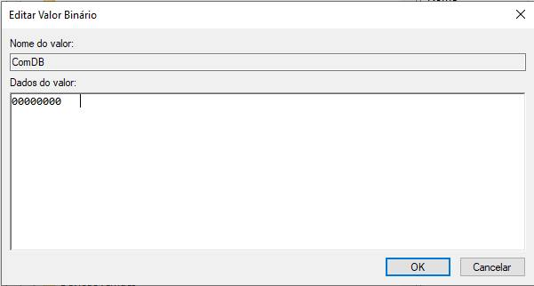

Liberação de Portas Seriais (Portas COM)
Este tutorial explica como liberar as portas seriais (portas COM) quando estiverem em uso, mesmo sem equipamento conectado ou sendo mostradas nas portas do computador.
Por Guilherme Leite
Passo a Passo para Liberar as Portas COM
Siga os passos abaixo para liberar as portas COM no seu computador:
Passo 1: Acesse o Editor de Registro
Acesse o menu Iniciar (ou pressione Windows + R para abrir o Executar) e digite Regedit. Clique em OK.
Passo 2: Navegue até a Chave ComDB
No Editor de Registro, navegue até o caminho:
HKEY_LOCAL_MACHINE\SYSTEM\CurrentControlSet\Control\COM Name Arbiter.
Passo 3: Apague o Conteúdo de ComDB
Selecione a chave ComDB, clique com o botão direito e escolha "Modificar". Apague todo o conteúdo e clique em OK.
Passo 4: Reinicie o Computador
Após realizar o procedimento, reinicie o computador para que as alterações tenham efeito.
Observação: No caso de dispositivos como SAT e Impressora, após realizar esse procedimento, acesse o Gerenciador de Dispositivos e altere a porta do equipamento para a desejada. Recomenda-se desconectar e reconectar o equipamento após a alteração.
Considerações Finais
Esse procedimento é útil para resolver problemas de portas COM ocupadas sem motivo aparente. Certifique-se de seguir os passos corretamente para evitar problemas no sistema.